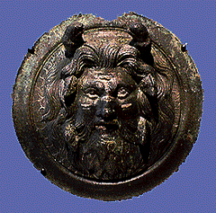

<!--This file created 10/16/97 5:55 PM by Claris Home Page version 2.0-->
<HTML>
<HEAD>
   <TITLE>Mpls Inst Arts - World Mythology: Oceanus</TITLE>
   <META NAME="GENERATOR" CONTENT="Claris Home Page 2.0">
   <X-SAS-WINDOW TOP="67" BOTTOM="480" LEFT="56" RIGHT="586">
<HEAD>
</HEAD>
<BODY TEXT="#111111" LINK="#660000" ALINK="#AA0000" VLINK="#444444" BACKGROUND="backgroundbrown.gif">

<P><FONT SIZE="+2">Curriculum Materials: World Mythology</FONT>
<HR>
<!--------Top Myth Menu------><TABLE BORDER="3">
   <TR>
      <TD>
         <P><CENTER><A HREF="introduction.html#top">Introduction</A>
         ~ <A HREF="mythbyimage.html#top">Myth by Image</A> ~
         <A HREF="culturelist.html#top">Myth by Culture</A> ~
         <A HREF="myths.html#top">Mythological Comparisons</A> ~
         <A HREF="glossary.html#top">Glossary</A> ~
         <A HREF="suggestedreading.html#top">Suggested Readings</A> ~
         <A HREF="downloadables.html#top">Downloadable Resources</A>
         ~ <A HREF="../tta/classroom_materials_order.html">How to Order</A> ~
         <A HREF="myth_evaluation.html#top">Your Comments Wanted</A>
         ~ <A HREF="#Story">Story</A> ~
         <A HREF="#Background">Background</A> ~
         <A HREF="#Questions">Questions</A></CENTER>
      </TD></TR>
</TABLE>
<HR>
<A NAME="top"></A>&nbsp;<TABLE BORDER="0" CELLSPACING="10" WIDTH="445">
   <TR>
      <TD>
         <P><A HREF="full_jpg/08.jpg"></A><BR>
         
         <B>Image 8</B><BR>
         
         <B><I>Oceanus</I></B><BR>
         
         Rome<BR>
         
         1st - 2nd centuries A.D. (Empire)<BR>
         
         Bronze<BR>
         
         4 1/8 inches<BR>
         
         The Lillian Z. Turnblad Memorial Fund 61.58<BR>
         
         
         <HR>
         </P>
         
         <P><CENTER><A NAME="Key"></A><B>Key Ideas</B></CENTER></P>
         
         <UL>
            <LI>According to Greco-Roman creation mythology, the
            Titan (TIE-tun) Oceanus (oh-SHE-a-nus) ruled the great
            river that encircled the earth.
            
            <LI>Affluent Romans displayed their wealth by decorating
            their furnishings with ornamental pieces such as this
            bronze boss.
            
            <LI>This Roman boss depicts Oceanus as a realistic human
            being rather than as a monster or sublime force of
            nature.
         </UL>
         
         <P>
         <HR>
         <A NAME="Story"></A></P>
         
         <P><CENTER><B>Story</B></CENTER></P>
         
         <P>Long before the world existed, there was
         Chaos--immeasurable, dark, and wild. Out of Chaos came Night
         and Erebus (AIR-a-bus), a dim place. All was still, black,
         silent, and without end until Love emerged. Love brought
         Light and Day, which then produced Earth. No one can recall
         just how any of this happened. Then Earth, called Gaea
         (JEE-ah), produced the boundless blue Heaven, called Uranus
         (YUR-a-nus). The union of Heaven and Earth produced gigantic
         monstrous children with overwhelming power. Among their
         children were the one-eyed Cyclops (SIGH-clops), the
         100-handed Hecatoncheires (hec-a-TAHN-churs), and the mighty
         natural forces, the Titans.</P>
         
         <P>Six female and six male Titans ruled the universe. One of
         them was called Oceanus because he ruled the great river
         Ocean that encircled the earth and formed its outermost
         limits. Oceanus and his Titan wife, Tethys (TEH-thees), had
         3,000 sons and 3,000 daughters. Their sons were the spirits
         of the rivers. Their daughters, known as Oceanids, were
         spirits of streams and springs. Eventually, the Titans'
         children destroyed their parents and became the gods of the
         Greek world.</P>
         
         <P>
         <HR>
         </P>
         
         <P><CENTER><A NAME="Background"></A><B>Background</B>
         </CENTER></P>
         
         <P><B>Creation Myth</B><BR>
         
         Greek creation myths, and their Roman counterparts,
         explained the origin, structure, and nature of the world.
         These mythologies were central to ancient religions, though
         as time passed they came to be viewed as literature more
         than anything. Hesiod (HES-ee-ud), the Greek poet-historian,
         wrote the most detailed account of the Greeks' creation
         mythology. He presented creation in the form of a
         genealogical chart. According to Hesiod, the six Titan
         couples produced the first generation of Greek deities.</P>
         
         <P>&nbsp;</P>
         
         <P>The ancient Romans adapted much of the Greeks' mythology,
         including their notion of creation. In many cases, Roman
         household gods, practical forces in daily life, took on the
         fabulous personalities and exciting exploits of the Greek
         gods.</P>
         
         <P><B>Roman Empire</B><BR>
         
         The Roman Empire was born in 31 B.C. when Octavian Caesar,
         later known as Augustus, triumphed after 90 years of civil
         war. Augustus and his immediate successors in the 1st
         century A.D. promoted the arts in order to display the
         grandeur of their empire.</P>
         
         <P><B>Realism</B><BR>
         
         The general, idealized figures of ancient Greek sculpture,
         frequently emulated by early Romans, gave way to realistic
         portraiture in the 1st century A.D. The Romans, who valued
         the family, recorded the faces and character traits of
         important family members in realistic portraits.
         Individualistic details such as wrinkled foreheads,
         prominent noses, or slacking jowls were marks of hard work
         and accomplishment. Artists portrayed gods and other
         mythical beings with similar
         <A HREF="glossary.html#REALISM">REALISM</A> and
         individuality.</P>
         
         <P><B>Furnishings</B><BR>
         
         Affluent Romans liked to display their wealth in elaborately
         decorated furnishings. Ornamental pieces, called bosses,
         adorned the juncture points of tables, stools, and the
         curving heads and footboards of luxurious bronze and wooden
         couches. The finest pieces incorporated detailed
         <A HREF="glossary.html#INLAY">INLAY</A> work in silver,
         ivory, and tortoiseshell.<BR>
         
         <BR>
         
         <B>Oceanus</B><BR>
         
         This circular bronze boss depicts the Titan Oceanus. His
         bearded face projects out from a
         <A HREF="glossary.html#BACKGROUND">BACKGROUND</A> of
         decorative scales. In keeping with the artistic realism of
         the time, Oceanus is portrayed as a bearded old man, not as
         a monster or a sublime force of nature. Locks of wavy hair
         frame his heavy face. His eyes are inlaid silver, and silver
         and copper inlays highlight his cheeks, nose, and forehead.
         Two dolphins leap from the top of his head, suggesting the
         form of a crown and alluding to Oceanus's role as an aquatic
         ruler. Two fish dive among the locks of his hair near his
         temples, and two others emerge from his beard.</UL>
         <HR>
         </P>
         
         <P><CENTER><B><A NAME="Questions"></A>Discussion
         Questions</B></CENTER></P>
         
         <P><B>Look</B><BR>
         
         <B>1.</B> <B>Tell the story of Oceanus.</B> What did Oceanus
         rule over as a Titan? <B>(The ocean.)</B> Can you see
         evidence of his role as ruler of the ocean in this bronze?
         <B>(Head emerges out of a "scaly"
         <A HREF="glossary.html#BACKGROUND">BACKGROUND</A>. Two
         dolphins rise out of his head at the crown. Fish swim in and
         out of his hair and beard.)</B></P>
         
         <P><B>2.</B> How big do you think this bronze sculpture is?
         <B>Discuss the function of the boss as furniture decoration.
         </B> With this purpose in mind, how big do you think this
         is? <B>Images can be deceiving! Show an object of similar
         size to illustrate the small size of the boss - 4 1/8
         inches. </B>What kind of furniture do you think this was
         made for? A chair? A bed? Why? <B>(No right answer since we
         don't know for sure.)</B></P>
         
         <P><B>3.</B> <A HREF="glossary.html#SUBTRACTIVE">SUBTRACTIVE
         SCULPTURE</A> is made by removing unwanted material from a
         solid mass, such as wood or marble.
         <A HREF="glossary.html#ADDITIVE">ADDITIVE SCULPTURE</A> is
         made by building up a form by molding or
         <A HREF="glossary.html#MODELING">MODELING</A> a material
         such as clay. Is this bronze boss an example of additive or
         subtractive sculpture? <B> Discuss bronze casting, an
         additive method of sculpting, in which an artist models the
         sculpture in clay, then uses it to make a mold for molten
         bronze.</B></P>
         
         <P><B>4.</B> Artists throughout time have often
         <A HREF="glossary.html#EMBELLISH">EMBELLISHED</A> their
         sculptures, adding material to the basic medium for
         decorative and/or expressive effects. How did this artist
         embellish this sculpture?
         <B>(<A HREF="glossary.html#INLAY">INLAID</A> silver eyes and
         silver and copper inlay on cheeks, nose, and forehead.)</B>
         What function do these embellishments serve? <B>(Adding
         precious metals make the boss more valuable, expressing the
         wealth of its owner.)</B><BR>
         
         <BR>
         
         
         <HR>
         <B>Think</B><BR>
         
         <B>1.</B> This bronze boss was used to decorate a piece of
         furniture in ancient Rome. How do we decorate furniture
         today? <B>(Carved wood, paint, combining different materials
         such as wood and metal, much like ancient Romans!)</B></P>
         
         <P><B>2.</B> Ancient Romans placed great emphasis on
         realistic portraiture and so chose to represent the natural
         force of the ocean, Oceanus the Titan, as an individual,
         realistic human. How would you represent a natural force
         such as the wind, or an earthquake? Would your
         representation be human? Animal?
         <A HREF="glossary.html#ABSTRACT">ABSTRACT</A>?
         <A HREF="glossary.html#NON-OBJECTIVE">NON-OBJECTIVE</A>?
         Explain your answer.</P>
         
         <P><B>3.</B> The artist who made this bronze boss
         <A HREF="glossary.html#INLAY">INLAID</A> it with silver and
         copper to make it more valuable. Today people still increase
         the value of objects by adding precious materials. What are
         some examples? <B>(Jewelry with precious stones such as
         diamonds are more valuable than plain metals; coats with fur
         trim; floors inlaid with custom tile or stone; cars with
         leather upholstery; a ceiling with
         <A HREF="glossary.html#GILDING">GILDED</A> or molded
         decoration.) </B>Are there other ways we make things more
         valuable? <B>(Logos, designer names or sports SYMBOLS on
         clothing. Hand-made items are often more valuable than their
         machine-made counterparts.)</B></P>
         
         <P><B>4.</B> This bronze boss is a Roman interpretation of a
         Greek myth. Is one culture's interpretation of another's
         mythology an authentic interpretation? Why or why not? Would
         we consider this more genuine or legitimate if it had been
         made by a Greek artist? Why or why not?<FONT SIZE="+2">
         <HR>
         </FONT>
      </TD></TR>
</TABLE> <TABLE BORDER="3">
   <TR>
      <TD>
         <P><CENTER><A HREF="introduction.html#top">Introduction</A>
         ~ <A HREF="mythbyimage.html#top">Myth by Image</A> ~
         <A HREF="culturelist.html#top">Myth by Culture</A> ~
         <A HREF="myths.html#top">Mythological Comparisons</A> ~
         <A HREF="glossary.html#top">Glossary</A> ~
         <A HREF="suggestedreading.html#top">Suggested Readings</A> ~
         <A HREF="downloadables.html#top">Downloadable Resources</A>
         ~ <A HREF="../tta/classroom_materials_order.html">How to Order</A> ~
         <A HREF="myth_evaluation.html#top">Your Comments Wanted</A>
         ~ <A HREF="#Story">Story</A> ~
         <A HREF="#Background">Background</A> ~
         <A HREF="#Questions">Questions</A></CENTER>
      </TD></TR>
</TABLE></P>
</BODY>
</HTML>
